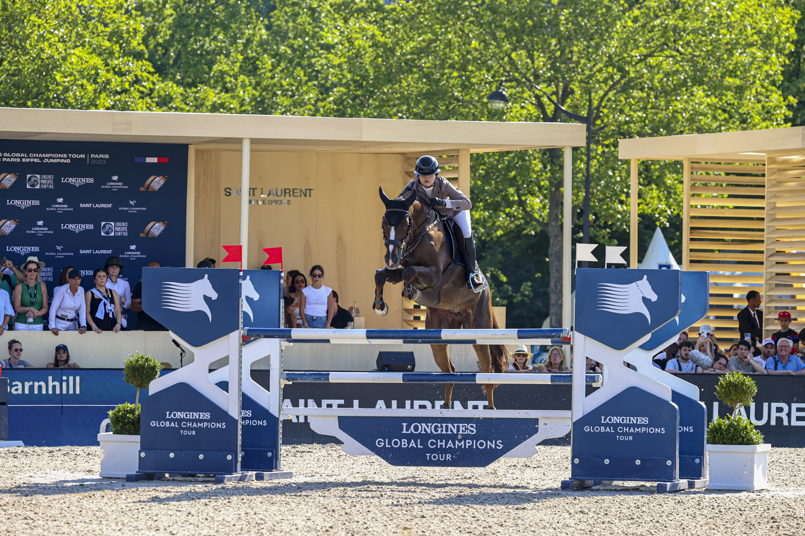

La Baule afronta su Rolex Grand Prix del domingo con 11 del top 15 del ranking mundial
El CSIO5* Jumping International de La Baule cierra este domingo su 53ª edición con el Rolex Grand Prix Ville de La Baule, prueba dotada con 500.000 euros y que se disputa a partir de las 14:30 hora local. El campo francés llega con 11 de los 15 mejores jinetes del ranking mundial en pista, una de las…

Uso editorial
El CSIO5* Jumping International de La Baule cierra este domingo su 53ª edición con el Rolex Grand Prix Ville de La Baule, prueba dotada con 500.000 euros y que se disputa a partir de las 14:30 hora local. El campo francés llega con 11 de los 15 mejores jinetes del ranking mundial en pista, una de las concentraciones de talento más altas del calendario europeo de salto.
El concurso, oficial de Francia y parada fija del Rolex Series, ha repartido los focos durante la semana entre la Copa de Naciones del viernes —que conquistó el equipo galo por delante de Alemania e Irlanda— y las pruebas grandes del jueves y el sábado. El sábado, Gregory Wathelet se impuso en el Prix HUS Reproduction con Romance van de P, mientras que la primera prueba grande del miércoles cayó en manos del irlandés Cian O'Connor. La actuación española más destacada hasta el momento la firmó Sergio Álvarez Moya, aunque su agenda principal este fin de semana es el CSI5* de Saint-Tropez.
El Gran Premio del domingo se disputa a dos mangas con baremo A al cronómetro y desempate en caso de empate a cero faltas. El recorrido lo firma el diseñador francés Grégory Bodo. Estados Unidos llega con el Icon Global US Jumping Team que dirige Robert Ridland; entre los nombres confirmados en el coliseo del Stade François-André figuran Henrik von Eckermann, Martin Fuchs, Kent Farrington y Daniel Deusser, todos habituales del podio en grandes citas Rolex.
La pieza Rolex Series, que enlaza La Baule con Aachen, Spruce Meadows y Ginebra, llega así a su tercer episodio del año tras Hong Kong y Knokke, con la mirada puesta también en la combinación necesaria para optar al Rolex Grand Slam.
— Redacción de Hípica al Día